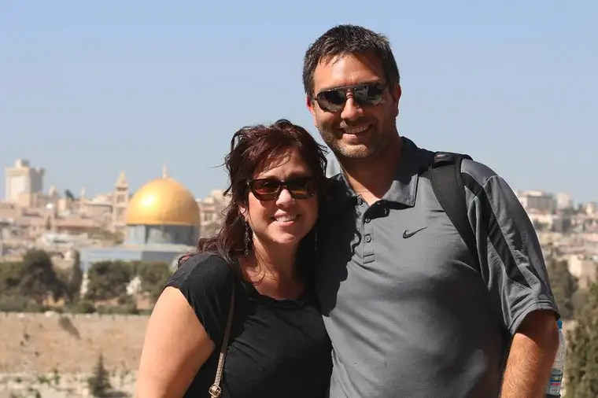

FARGO — Since visiting the Holy Land in October, Eric and Brenda Krueger have been seeing the stories of faith developing in their minds since childhood with new layers, color and even flavor.
“It’s like tiramisu for the faith,” Brenda says, “the difference between two-dimensional and three-dimensional.”
For the faithful, visiting the land where Jesus trod, rather than relying only on Scripture, can, as the Kruegers attest, bring biblical stories to life.
This Christmas, rather than the St. Francis-inspired version of the Nativity crèche many imagine, they carried a more realistic image of the actual cave where Jesus was born.
And they know that though Jesus was a carpenter, he didn’t work with wood, but with stones so prominent in the area.
“Everything became more real,” Brenda says, “and what amazed me is that most of Jesus’ 22 miracles happened around the Sea of Galilee, where we were, which is only about as big as Detroit Lakes.”
From there, one could see the mountain separating Jerusalem from Syria and Lebanon.
“It was profound to realize how the legacy of Jesus Christ has spread in such large scope from such a small area,” Brenda says.
“And how they walked everywhere, like the road from Tiberius to Cana,” Eric adds. “You hear about all these places but you can stand on a hilltop and see all of them.”
Tammy O’Day, a Fargo travel agent, says while working in the Twin Cities years ago, her agency had a desk designated for Holy Land tours.
She says trips to Israel tend to peak during Easter time.
“From my experience, traveling within the U.S. or Europe destinations, the end of April and May rates are lower, with September and October lower all around … but it really depends on what the individuals or groups are looking for in terms of destination, etc.”
Those who go will discover that the movements of the people back then — as now — were based on the livelihood of fishing.
“Magdala was a big fishing port. They had a lot of salt there, and the fishermen would bring their fish there to salt it so it would keep,” Eric says. “So it was all the religious story intertwined with the economic story.”
Or they discover, as the Kruegers did with the help of their Arabic-accented tour guide, George, that the “apple” that tempted Adam was more likely a pomegranate.
“There are 631 seeds in a pomegranate, and 631 minor commandments in the Jewish law,” Brenda explains, noting that it seems fitting as the forbidden fruit. “Six plus three plus one is 10 — as in the Ten Commandments.”
The couple would still be picturing an apple if Eric hadn’t taken a business trip to Tel Aviv in 2004. On the plane, he met a Jewish rabbi, who told him that as a Christian, he had to visit Jerusalem. And so he did.
“That trip was a life-changer,” Eric says. “It gave me a new perspective on the Bible. I knew this wasn’t a made-up place you just read about. I could say I’d been there.”
He’s yearned ever since to experience it anew with Brenda. And in June, during a Rome trip with national Christian radio host Lino Rulli, the couple learned of an opening for an upcoming Israel pilgrimage, also led by Rulli.
It would mean leaving behind, again, their teen daughters, Ella and Mia, and for Brenda, a teacher at Nativity Elementary, missing parent-teacher conferences. But both their daughters and her third-graders were able to live through them vicariously.
“When I showed my students the itinerary, they were like, ‘Jericho? Capernaum? You get to go to the Dead Sea?’ ” Brenda says, adding that she brought each back a Christmas ornament fashioned from olivewood, made by the small number of remaining Christians in Palestine.
Highlights included renewing their marriage vows in Cana, and for Brenda, visiting the spot where, after Jesus rose, he cooked fish for the disciples after showing them where to cast their nets.
“There’s this rock, the mensa Christi, where Jesus prepared the food,” Brenda says. “It’s a blessing place now, and instantly I started to cry thinking how Peter screwed up so many times and Jesus still said, ‘You are the leader, you are the one who will bring the people to me, to feed my sheep.’ ”
She adds, “Life gets in the way of who we are and who we want to be and the distance between the two, like with Peter. And yet, Jesus believed in him, and loved him.”
“He always gave him another chance,” Eric adds. “Like, ‘Come on Peter, step it up!’ ”
“For me, being there affirmed the idea that we are all leaders in our families and in our lives,” Brenda says, “and that in our daily work, Jesus is there.”
Two minor instances did concern some of their fellow pilgrims — bomber planes flying overhead and a riot, both of which took place at a key moment during Mass — but Brenda says they were not fearful.
“When I heard the noise of a bomber plane … I was thinking, ‘This is weird, but we’re in the perfect place right now.’ ”
What turned out to be a routine mission, Brenda says, became an opportunity to ask herself whether she was committed enough in her faith to be steadfast.
The rest was all blessing, they agree.
“We woke up together every morning from a nice sleep, socialized every evening, and got on the bus each day saying, ‘What amazing places will we see today?’ ” Brenda says.
The Kruegers say anyone with a faith connection to the Holy Land — whether Muslim, Jewish or Christian — who visits there will not be disappointed.
“It’s easy to go to Cancun and drink margaritas. I’m not saying that’s not a great place to go, but we were celebrating in the Dead Sea,” Brenda says. “That kind of Mediterranean vacation can happen where Jesus walked, too, and why not go there instead and deepen your understanding of the faith?”
[For the sake of having a repository for my newspaper columns and articles, I reprint them here, with permission, a week after their run date. The preceding ran in The Forum newspaper on Jan. 9, 2017.]